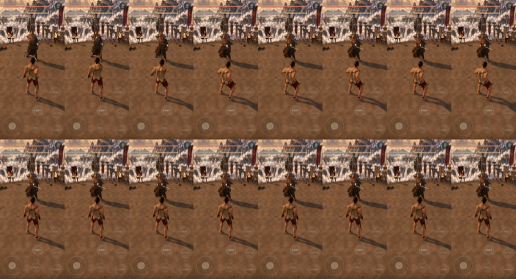
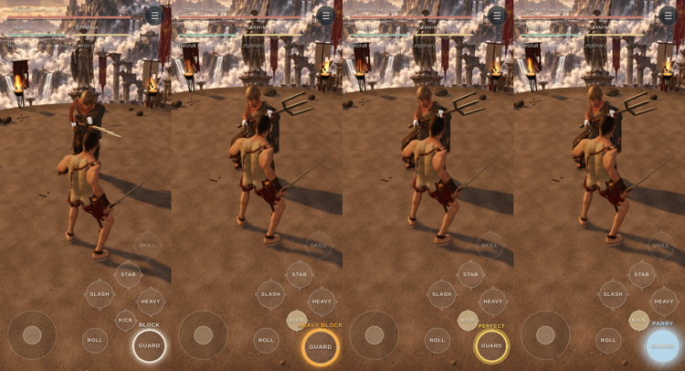
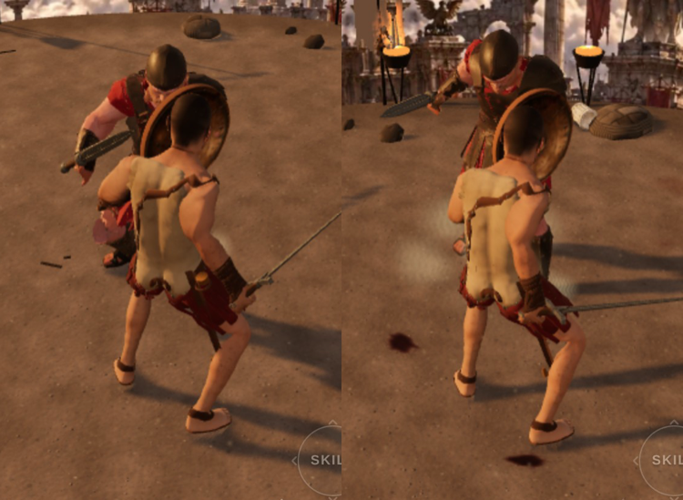
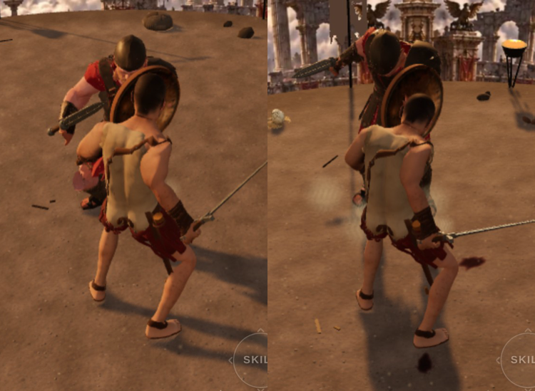
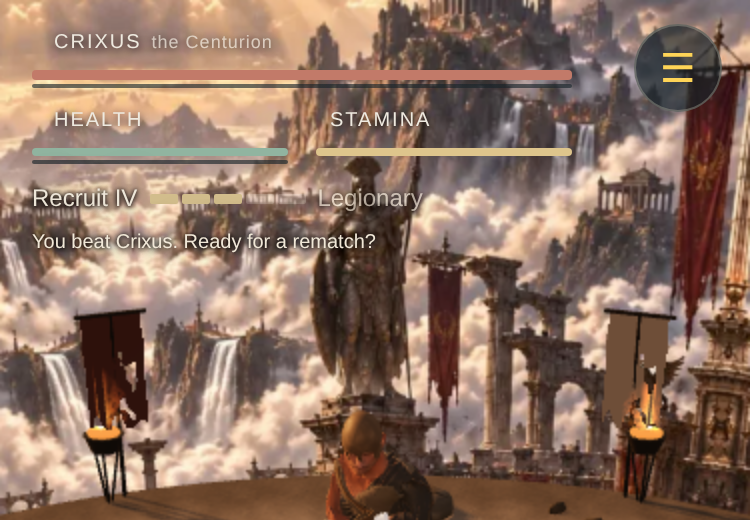
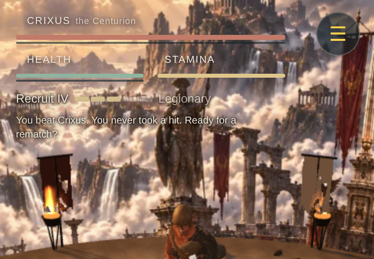
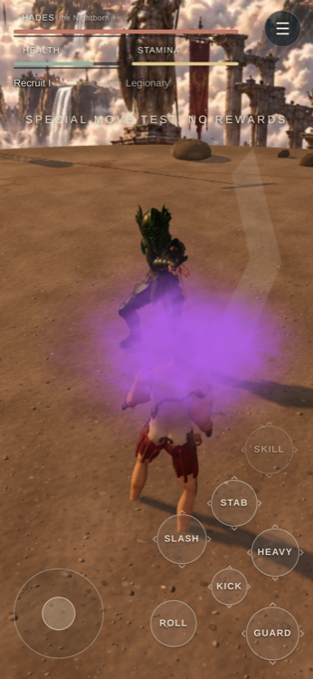
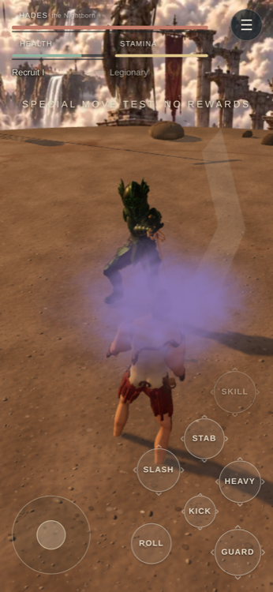
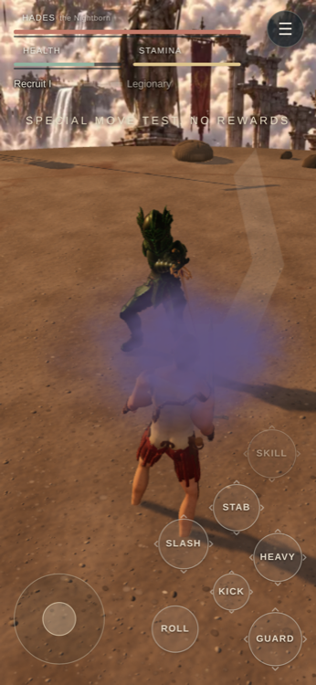

Your picks
Tap the link, play one fight on your phone, decide. Nothing here changes the live game.
1. Standoff
Choosing: do both fighters draw their swords together after the versus card?

Top row: standoff on. Bottom row: today (he stands sheathed until your first press).
2. Four defence grades
Choosing: should plain block, heavy chip, perfect block and parry each look and sound different?

Plain, heavy chip, perfect, parry on the Guard button. The sound mixes are first guesses.
3. Tired fighter, readable from behind
Choosing: does the tired pose now show clearly from the back camera?


Top: today. Bottom: the new pose. Run your stamina down to see it.
4. Victory headline
Choosing: after a win, one earned line (such as "You never took a hit.") before the rematch prompt?


Top: today. Bottom: with the headline. Nothing earned means nothing said.
5. Break beat
Choosing: how long the game freezes when you break their posture (120, 150 or 180 ms), plus a dry thud. Today is 120 ms and silent.
No still: it is a timing and sound choice. Break their posture in each and listen.
6. Spell colours
Choosing: how strongly each spell school is tinted (fire, shadow, poison, holy, frost). Today everything stays grey and dark.

Plain: full colour

Soft: half strength

Dark: colour kept deep